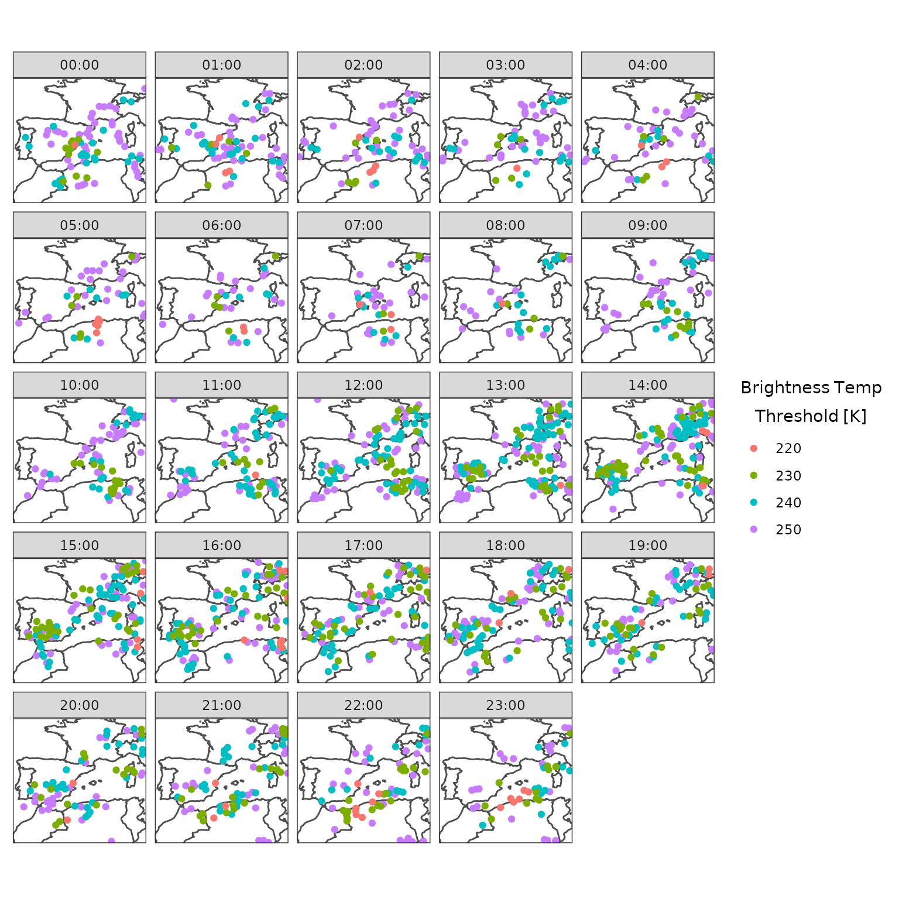

vignettes/tracking_seviri_brightness_temp.Rmd
tracking_seviri_brightness_temp.RmdThe purpose of this article is to show how to read in data that harp cannot natively deal with. In this case we will read in SEVIRI brightness temperature data from a NetCDF file that lacks information about the domain.
The data are stored as example data with the harpTobac
package and can be accessed via the system.file()
function.
file_name <- system.file(
"example_data/Spain_202205_SEVIRI_bt_all.nc",
package = "harpTobac"
)
nc <- nc_open(file_name)Longitude and latitude are stored as 2d arrays, so let’s read them in and then close the connection to the NetCDF file.
Now we need to establish the grid resolution. We can establish if the data are on a regular grid, by checking if the mean difference between each value is the same as the maximum.
identical(apply(diff(lon), 1, mean), apply(diff(lon), 1, max))
#> [1] TRUE
identical(apply(diff(t(lat)), 1, mean), apply(diff(t(lat)), 1, max))
#> [1] TRUENow that we have established that the data are on a regular grid, we can extract the horizontal resolution.
Finally we need the centre point of the domain in order to properly define the domain.
Now we can define the domain.
dom <- define_domain(
centre_lon = centre_lon,
centre_lat = centre_lat,
nxny = dim(lon),
dxdy = c(dx, dy),
proj = "longlat"
)
plot(dom)We also need to get the time data from the file. These are stored in hours since the first date-time, but we want the data to be the actual date times. harpIO has a, currently non exported function, that can read the time data and convert them in date-times in UTC.
valid_dttm <- unixtime_to_dttm(
harpIO:::get_time_nc(file_name, harpIO::netcdf_opts())$validdate
)The brightness temperature is stored in degrees C, which we will
convert to Kelvin. We will read in one time at a time and use the domain
e have just defined to put the data into a geofield, and subsequently a
geolist. We will do this with the help of lapply() and put
the data in a tibble (just a data frame with a nicer print method).
library(tibble)
nc <- nc_open(file_name)
bt <- tibble(
valid_dttm = valid_dttm,
brightness_temp = geolist(
lapply(
seq_along(valid_dttm),
function(i) geofield(
ncvar_get(nc, "bt", start = c(1, 1, i), count = c(-1, -1, 1)) + 273.15,
domain = dom
)
)
)
)
nc_close(nc)Finally the harpTobac functions require the data to be of
class harp_df and we can easily do that conversion with
as_harp_df()
bt <- as_harp_df(bt)We will detect features using minimum brightness temperature thresholds of 250, 240, 230 and 220 K.
features <- detect_features_multithreshold(
bt,
thresholds = seq(250, 220, -10),
data_col = brightness_temp,
target = "min",
n_min_threshold = 16,
position_threshold = "weighted_diff"
)And plot the feature locations at each time.
countries <- get_map(get_domain(bt$brightness_temp), polygon = FALSE)
ggplot(features, aes(longitude, latitude)) +
geom_path(aes(x, y), countries, colour = "grey30") +
geom_point(aes(colour = factor(threshold_value))) +
facet_wrap(~timestr) +
coord_equal(expand = FALSE) +
theme_harp_map() +
labs(colour = bquote(atop(Brightness~Temp, Threshold~"["*K*"]")))
We will segment the data using a threshold of 250K.
library(zeallot)
c(segments, features) %<-% segment_2d(
features,
bt,
threshold = 250,
data_col = brightness_temp,
target = "min"
)And plot with the brightness temperature for some selected times.
ggplot() +
geom_georaster(
aes(geofield = brightness_temp), bt[13:16, ],
upscale_factor = 4, upscale_method = "downsample"
) +
geom_geocontour(
aes(geofield = segmentation_mask), segments[13:16, ],
colour = "red"
) +
geom_path(aes(x, y), countries, colour = "grey30") +
facet_wrap(~valid_dttm) +
scale_fill_viridis_c(direction = -1) +
coord_equal(expand = FALSE) +
theme_harp_map()Now we can compute the cell tracks.
tracks <- link_tracks(
features,
bt,
data_col = brightness_temp,
v_max = 20,
stubs = 2,
subnetwork_size = 100,
adaptive_step = 0.95,
adaptive_stop = 0.2
)And plot them, separately for each feature threshold.
countries <- get_map(get_domain(bt$brightness_temp))
ggplot(filter(tracks, cell > -1), aes(x, y)) +
geom_polygon(aes(group = group), countries, fill = "grey", colour = "grey30") +
geom_path(
aes(group = factor(cell), colour = factor(threshold_value)),
arrow = arrow(type = "open", angle = 30, length = unit(0.1, "cm"))
) +
facet_wrap(~paste0("Brightness temp >= ", threshold_value, "K")) +
labs(colour = bquote(atop(OLR~threshold, "["*W.m^{-2}*"]"))) +
coord_equal(expand = FALSE) +
theme_harp_map()